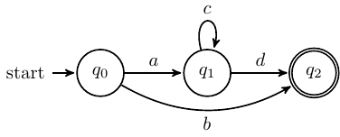

Solutions to mid-semester 2
16 March, 2020
Question 1
Consider the language over the alphabet \(\Sigma=\{a, b, c, d\}\) recognized by the following non-deterministic finite state automaton.

Part a)
Find a regular expression that describes the language.
Answer: \(ac^*d \cup b\)
The usual method of adding “empty” arrows is useful to shorten the proof that every regular language can be defined by a regular expression, but unnecessarily long in this situation. There are no arrows going into the initial state and no arrows coming out of the final state, and the loop is responsible for the \(c^*\).
Part b)
Convert the automaton to a deterministic automaton that recognizes the same language but which has at most one extra state.
Remember that in a deterministic automaton, one must have a unique new state for each state and each letter of the alphabet. The automaton is non-deterministic because some states do not have arrows corresponding to certain letters coming out it. Reading such a letter when it is in that state should make it die out. So all one needs to do is to add one “reject” state to which all such letters are redirected.
Part c)
Find a context free grammar that generates the language.
Since the language may be thought of as a union of two languages, we can use a variable to branch out, leading to the following rules:
- \[S \to A \ |\ b\] (The variable \(A\) will take care of strings of the form \(ac^*d\), but the string may also be a single \(b\). Some of you added an extra variable \(B\), which then led to the terminal \(b\). That is fine, but not necessary in this case).
- \[A \to aCd\] (Only the \(C\) is repeated, so we need an extra variable to take care of the repetition; the \(a\) and \(d\) may be added immediately.
- \[C \to cC \ |\ \epsilon\] (The variable on the right hand side allows the C to be repeated indefinitely. When it needs to stop, one can use the empty string. Several variations here are also fine, including replacing the empty string with a single \(c\) or \(C \to CC \ |\ c\)).
Some of you have done it by following the general algorithm to convert a finite state automaton recognizing a language into a context free grammar recognizing the same language. Then you would get a rule for each state. The method is longer than needed when applied to this case but more general and also perfectly fine.
Question 2
Find regular expressions to describe the following languages, each over the alphabet \(\{0, 1\}\).
Part a)
All strings except the string 10.
Answer: \(\epsilon\cup \Sigma\cup \Sigma\Sigma\Sigma^* \cup 00 \cup 01 \cup 11\)
Note that this is a complement of a finite (in fact singleton) language. So strings that avoid certain fixed lengths (in this case, 2) are definitely in the language, and the rest are finite in number. Therefore, the regular expression may involve \(\epsilon \cup \Sigma\cup \Sigma\Sigma\Sigma^*\) to ensure that all strings of lengths 0, 1, or 3 and above are included. Now among the four possible length 2 strings, we only need to add \(00\), \(11\), and \(10\). Some of you have given minor variations of this by explicitly including everything of lengths 0, 1, and 2, which are all fine as long as you observed that you could split the problem into an infinite part which is easy to tackle because it includes all strings of lengths greater than 2, and a finite part that can be tackled explicitly (but in some cases, shortened).
Part b)
Strings for which the third last character is 0.
Answer: \(\Sigma^*0\Sigma\Sigma\)
Some of you have tackled the problem by noting that the last three characters can have only finitely many variations so \(\Sigma^*000 \cup \Sigma^*001\ldots\), which is also fine.
Question 3
If a non-deterministic finite state automaton, \(N:=(Q, \Sigma, \delta, q_0, F)\) with at most two states recognizes a language \(L\), is it necessary that \(N':=(Q, \Sigma, \delta, q_0, F^c)\) must recognize \(L^c\)? If you think it is always* true, then explain why, otherwise, give an explicit example of an \(N\) and a string which is either accepted by both \(N\) and \(N'\) or rejected by both.*
This need not be true; it is only true for a deterministic finite state automaton. Any non-deterministic finite state automaton that has no looping arrows can only recognize a finite language. Even after flipping the accept and non-accept states, it will have to accept another finite language which cannot possibly exhaust the complement of a finite language because \(\Sigma^*\) is infinite. From this is it is straightforward to construct an example and there are many possibilities. In fact, it is quite easy to come up with examples; almost any truly non-deterministic one with the possibility of dying out would have worked.
Question 4
Consider the context free grammars \(G_1=(V_1, \Sigma_1, R_1, S_1)\) and \(G_2=(V_2, \Sigma_2, R_2, S_2)\) generating \(L_1\) and \(L_2\), respectively.
Part a)
How will you define a context free grammar \(G = (V, \Sigma, R, S)\) that recognizes \(L_1\cup L_2\)? The new rules should be \(R_1\cup R_2 \cup \{S \to S_1 \ |\ S_2\}\), where \(S\) is a new variable. We need a new start state \(S\) and the rule, \(S \to S_1 \ |\ S_2\). If one chooses \(S_1\) during the deduction, then one can generate all the strings in the first language, and similarly, if one chooses \(S_2\), then one can generate all the strings in the second language. You therefore also need the original rules \(R_1\) and \(R_2\).
Some of you combined each rule from \(R_1\) with a rule from \(R_2\) by using \(|\). This will include all strings in the union of the two languages but will also include many more that are not intended (try to think of an example!).
IMPORTANT: \(S = S_1 \cup S_2\) is a completely nonsensical expression! \(S_1\) and \(S_2\) are not sets; taking their union makes no sense! Similalry, wrting \(A_1 \to B_1 \cup B_2\) is completely meaningless.
Part b)
How will you define a context free grammar \(G = (V, \Sigma, R, S)\) that recognizes \(L_1 \circ L_2\)?
The new rules can be \(R_1\cup R_2 \cup \{S \to S_1 S_2\}\). The new start state triggers the generation of two blocks of strings, where the first one is in \(L_1\) and the second one is in \(L_2\).
Once again, \(R_1\circ R_2\) is complete nonsense. You can concatenate strings, not rules!
Part c)
How will you define a context free grammar \(G = (V, \Sigma, R, S)\) that recognizes \(L_1^*\)?
The new rules can be \(R_1 \cup \{S_1\to S_1S_1 \ |\ \epsilon\}\). \(L^*\) contains strings of the form \(w_1w_2\ldots w_n\). The rule \(S_1 \to S_1S_1\) allows the start variable to replicate itself the required number of times, say \(n\) times. So we can derive \(S_1S_1 \ldots S_1\). Now each of these \(S_1\) can be replaced eventually by a string in \(L\) using the previous rules.